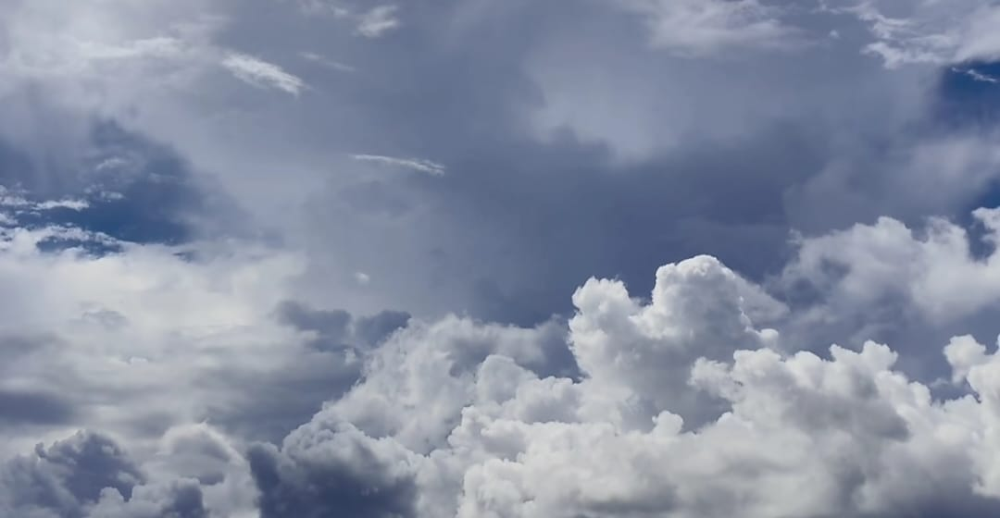

kembang rumput (Bidens pilosa), yang juga dikenal dengan nama lain seperti ketul, kembang jontang, atau kembang ciplukan.


Langit adalah pandangan yang tidak terhalang ke atas dari permukaan Bumi. Langit meliputi atmosfer dan luar angkasa dan dapat dianggap sebagai tempat di antara tanah dan luar angkasa.